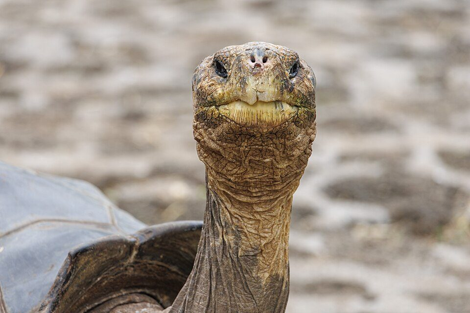

Islands and coasts
Greenland, the Galápagos, the Maldives and the Canary Islands: how islands form, and the largest and strangest on the planet.


There are hundreds of thousands of islands on Earth: Sweden alone has more than 260,000. Some are the size of a country and others the size of a rock; some are icy and others tropical, some newborn and some very old. Because of their isolation, they are laboratories of evolution and are home to species found nowhere else.
How islands form
- Continental: pieces of continent cut off by the sea, such as Great Britain, Madagascar or the Balearic Islands.
- Volcanic: raised by eruptions from the ocean floor, such as Hawaii, Iceland or the Canary Islands. Some are very young: Surtsey, off Iceland, was born between 1963 and 1967.
- Coral: atolls are rings of reef surrounding a lagoon. They form on top of volcanoes that slowly sink while the coral keeps growing towards the light, as Darwin explained.
Record-breaking islands
- Largest: Greenland, at 2.17 million km², more than four times the size of Spain. Australia is bigger but counts as a continent. 80% of Greenland is covered in ice.
- Most populous: Java, in Indonesia, with some 150 million people.
- Most remote inhabited island: Tristan da Cunha, in the South Atlantic, about 2,400 km from the nearest coast, with around 250 residents.
- Indonesia is the country with the most inhabited islands: it has more than 17,000 in total.
Islands that are worlds apart
- The Galápagos (Ecuador), where Darwin studied his finches, have giant tortoises, marine iguanas that dive to eat seaweed and cormorants that have lost the ability to fly.
- Socotra (Yemen) has umbrella-shaped dragon's blood trees, and a third of its plants exist nowhere else.
- Madagascar split from Africa 160 million years ago: 90% of its wildlife is endemic, including all the world's lemurs.

.jpg){kind=link}
The Maldives in danger
The Maldives is the lowest-lying country in the world: its highest point barely exceeds 2 metres above sea level and the average height is 1.5 metres. Rising seas threaten its very existence. In 2009 its government held a cabinet meeting underwater, in scuba gear, to draw the world's attention.
The islands of Spain
Spain has two major archipelagos of very different origin:
- The Balearic Islands are continental: the underwater continuation of the Betic mountain ranges.
- The Canary Islands are volcanic and still active: the last eruption, Tajogaite on La Palma, was in 2021. Lanzarote has lava landscapes from the Timanfaya eruptions of 1730–1736, which lasted six years, and the whole island is a Biosphere Reserve. El Hierro saw an underwater volcano born in 2011.
Astonishing coasts
The coast is the planet's most changeable frontier. Waves carve cliffs, caves and rock arches, while rivers and currents build beaches, sand spits and deltas. The Giant's Causeway in Northern Ireland is made of some 40,000 hexagonal basalt columns formed as a lava flow cooled slowly. In Spain, As Catedrais beach (Lugo) has rock arches up to 30 metres high that can only be explored at low tide.
Videos to understand it better
- How Coastal Erosion WorksPractical Engineering · 1.4M views
Videos are from YouTube and belong to their creators. They only load when you click them. See all videos →